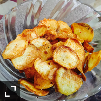

Back
Potato Chips Recipe

Homestyle Potato Chips
Homemade potato chips are fun and easy. Guaranteed they won't last long! A food processor with a slicing attachment is very helpful for slicing the potatoes. Experiment with the thickness; you may like them thicker or thinner. I like to use olive oil for frying, but you can use safflower, corn, or peanut oil as well as vegetable oil.
Ingredients
- 4 medium potatoes, peeled and sliced paper-thin
- 3 tablespoons salt, plus more to taste
- 1 quart oil for deep frying
Directions
- Step 1 Transfer potato slices to a large bowl of cold water as you slice them.
- Step 2 Drain slices and rinse under cold water. Refill the bowl with water, add 3 tablespoons salt, and put slices back in the bowl. Let potatoes soak in the salty water for at least 30 minutes.
- Step 3 Drain and rinse slices again. Pat dry.
- Step 4 Heat oil in a deep-fryer to 365 degrees F (185 degrees C).
- Step 5 Working in small batches, fry potato slices until golden. Remove with a slotted spoon and drain on paper towels. Continue until all of the slices are fried.
- Step 6 Season potato chips with additional salt if desired.